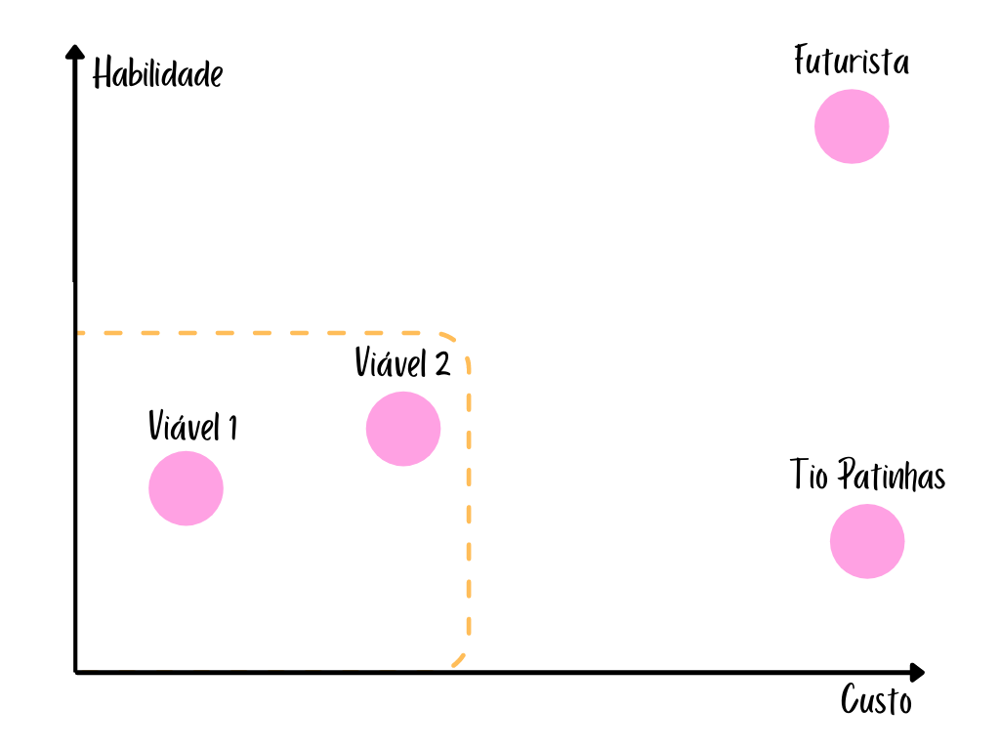

-
Produto Tio Patinhas:
Comprar múltiplas máquinas que conseguem imprimir imagens em comida,
o cliente manda a imagem que ele quer por um app, e a imagem sai na comida dele.
-
Produto Futurista:
Criar uma impressora 3d de comida, assim a comida pode ser do jeito que o cliente quiser,
no app, o cliente teria o modelo 3d da comida que poderá editar (aumentando, esticando,
mudando a cor, fazendo o formato que quiser, etc)
-
Produto Viável 1:
App/site em que a pessoa pede a comida, e pode escolher a cor dos componentes da comida.
Ex: quero hambúrguer roxo, o cliente coloca hambúrguer roxo no app, na hora de fazer o alimento,
o cozinheiro vê o pedido no app, e lá tem que o cliente quer hambúrguer roxo, assim ele só precisa
colocar o corante comestível roxo no hambúrguer.
-
Produto Viável 2:
App/site em que a pessoa pede a comida, e pode fazer uma customização mais complicada dela,
Ex: quero que tenha um pikachu desenhado no meu arroz, o cliente desenha o pikachu no app,
o cozinheiro vê o pedido pelo app, e cria a refeição da maneira que o cliente quer.
|

|